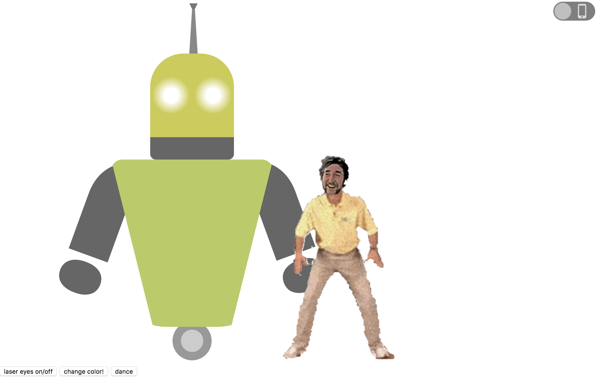

Experience
I recently graduated from a Front-End Web Development course at General Assembly where I learned HTML, CSS, JavaScript, and jQuery and how to be an awesome Front-End Web Developer! During my spare time, I enjoy cooking my favourite dishes, watching movies and hanging out with my friends.
PORTFOLIO
-
Freelance Web Developer, Vicky's Cafe 2018 - present
Built a small business website for Vicky's cafe styling for different screen sizes, used simple animations with Javascript and CSS.

-
Web Developer, Jeff's blog 2018 - present
Developed a responsive poetry blog theme for a great poet Jeff.

-
Web Developer, Laser eye robot 2018 - present
Built an animated laser-eye robot for an eccentric millionaire Cotter Patrick who wanted a life-like companion in robot.

EDUCATION
- General Assembly - FEWD 2018
- Central Queensland University - MPA 2015